FSDXA Comoros DXpedition
(2001.Feb.08-28)
運用開始

FSDXA Comoros DXpedition
(2001.Feb.08-28)
|
4棟のコテージに分散した(S1)から(S10)のサイト(Site)にはYAESUのMk-V・FT-1000MPとVL-1000が各6台、
HF用のFT-92Oとリニアーアンプ(FL-2100B)、6mのFT-920とリニアーアンプ(600W)、FT-900が2台、
FT-847、予備のリニアーアンプ・SB-200(Heathkit)などが配置された。 運用開始は2月9日00:00z(現地時間の午前3時)の一斉スタートに決まった。 この"一斉スタート"には「運用開始24時間の交信局数記録」に挑戦する目的があった。 当日のHF帯は全てのバンドがオープンしていたため動作可能な機器を総動員してフル運用された。 運用開始と同時に各バンドはパイルアップで溢れた。 6mは運用開始前日の8日夜、全員が集合してコンピューターと使用機器の講習会の最中にたまたまダイアルを止めていた50.110MHzでJY9NXのCQが入感してビックリ!。 この時は運用開始前だったため呼ぶことは出来ず、結局6mの初QSOは翌日の夜になった。 |
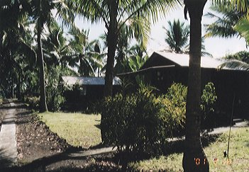
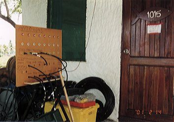
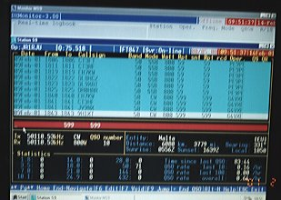
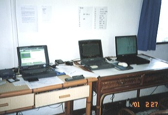
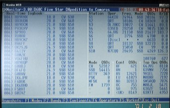
|
各サイトの運用状況は個々のPCでもモニター出来る。上の写真の画面に表示されている"情報"は、
左半分が現在運用されている各サイトの合算されたQSO状況(時間、コールサイン、バンド、モード)が1分刻みで21行表示されている。
パイルアップが激しい時にはスクロールする画面は1分以内のQSOデータで埋まる事もある。 右上の半分には各サイトの運用者のコールサイン、運用周波数、モード、一時間の処理数(QSOスピード)などが表示されている。 居眠りなどしているとこの処理スピードが落ちるので直ぐ判る？。 右下には現在の総QSO数(モード別、大陸別、オペレーターの個人別のQSO数)などが表示される。 この他にもファンクションKeyを選択することにより、バンド別のQSO数(モード別)や大陸別のQSO数(モード別)、 OP全員のQSO数(モード別)、QSOした局の全てのLOGを瞬時にサーチ出来る。 この画面は総QSO数 10,8740の時(2/18)のものだが、この時点での各大陸のQSO数は、EUが61,029、NAが32,813、 ASは12,621とJAを含むアジアのQSOが意外に少ないのが判る。 |
|
◎アジアの伝搬 コモロからの6mの伝搬はTEPによるヨーロッパが主になるのは予測出来たが、気がかりだったのはJAなど他の大陸とのオープンだった。 この時期は春のDXシーズンには少し早く、超DXとのQSOはあまり期待出来ないと思われた。 とくに10,000Kmを超えるJA本土は難しいパスで、オープンしても沖縄など低緯度の地域だけと予想された。 過去のアフリカ東部の入感状況からみて、JAにオープンする時間はFR、5R8などと同じ日本時間の夕方から夜間にかけてと予測した。 しかし、実際にJA方向が入感して来たのはこれより6、7時間も遅い14:00z(日本時間の23:00JST)頃から深夜過ぎだった。 JAとの初QSOとなった2月19日のオープンでは15:50z(日本時間00:50JST)頃、2回目のオープンの2月25日が16:00z(01:00JST)と、 2度とも日本では日付が替わってからの深夜のオープンだった。 この伝搬ルートは沖縄、奄美などでQSO出来ている9Q5、TL8、TR8など、中部アフリカ付近の伝搬と同じものだった。 この深夜のパスは、よほどコンデションの良い時期でないとJA本土ではQSOは難しい。 コモロでもアジア方面がオープンする時間帯に上昇してくる49.750MHzのテレビが良いパイロットとなった。 49.750MHzの上昇と共に48.250、48.260MHzが上昇、その後にインドのVU2ZAPなどが呼んでくると言うパターンが続いた。 TVが上昇してくるのは現地の午後5時頃からで、このパスが判ってからはこの時間帯はHFの運用シフトから外して貰い、 6mの運用に専念する事になった。シフト変更が行われたその日にタイミング良くVR2(香港)とのQSOに成功、JAとのQSOにも希望が出てきた。 結果的には予想した通りJAとのQSOは沖縄だけだったが、この"JAとのQSO成功"にD68Cのメンバー全員が拍手で祝ってくれた。 極東方面ではJAの他にVR2(香港)、BV(台湾)、BG(中国)などとQSO出来たが、とくにVR2は2月14日の初オープン以来、15、19、26、27日と強力に入感した。 |
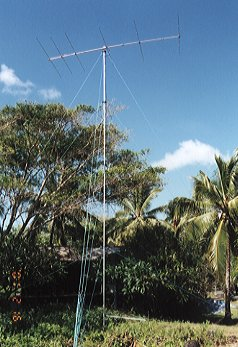
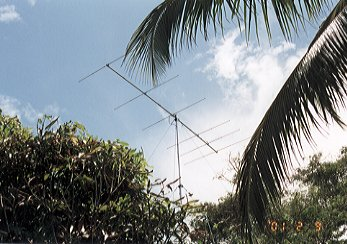
|
◎ヨーロッパの伝搬 極東アジア方面が一段落して一時間ほどするとJY、4X/4Z、5B4など西アジア地域が強力に入感し始める。 JAでもお馴染みのJY9NX・石原さんは毎日の様に強力に聞こえていた。 この伝搬はイブニングタイプのTEPとなるためフラッター気味の信号だが、JAで聞くVKの信号ほどフラッターはひどくない。 オープンするエリアは時間と共にSV、9H、I、EH、CT、CT3、EH8と地中海沿岸を西に移動して行くパターン。ただし、この時間帯の伝搬は遠距離まで伸びない。 この後はTR8、3C5などアフリカの大西洋岸が入感、現地時間の01:00(22:00z)過ぎまでガボン(Gabon)のTR0A(50.048MHz)のビーコンが聞こえていることが多い。 ときには早い時間帯からCN8LI(50.027MHz付近でBeaconも出ている)など北アフリカも入感して来ることもあり夜間の6mは賑わっている。 ビーコンも5B4CY、9H1SIX、OD5SIX、CN8LI、TR0Aなどを受信することが出来た。 遠距離の伝搬が可能と期待していた日中のパスは、DXpedi期間中に2度オープンした。 2月25日は1時間ちょっとの短いオープンに130局を超えるQSOが出来た。入感エリアも9A、S5、LZ、YOからOK、OE、SP、SM、UT/UYなど、 夜間とは違ったヨーロッパの中部以北が入感し、この日初めて6mでヨーロッパの"猛パイル"を経験する事が出来た。 このPediの"主催国"のG(UK)とは残念ながら一局もQSO出来なかった。 ZS(南アフリカ)ではG(UK)もオープンしていたとの事だが、HF帯のアンテナを撤収した後も6mを残してトライしたにも関わらず、 ヨーロッパでも最も西側に位置するG(UK)とアフリカ東部のコモロとは最後までパスは無く"時間切れ"となってしまった。 残念ながら北米、南米、オセアニアの伝搬はなかった。 |
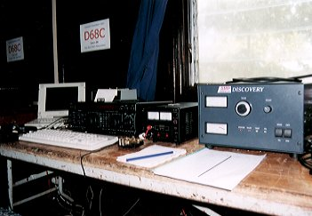
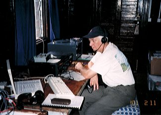
|
◎D68C(Comoros)の6m QSO Entityと初QSO局 D68Cの6mはFT-920+リニアーアンプ(英国製の3CX800 800W)と6el(Cushcraft製)での運用を予定していたが、 運用開始早々にこのリニアーアンプが使用不能となるアクシデントに見舞われ、6mは一時"戦力ダウン"となった。 しかし、HFの運用が一段落した中盤からYAESUのリニアーアンプVL-1000(約600W)の使用により、以後の運用は快調に行われた。 6mのコンデションには少し早めの時期にも関わらず、最終的にはJA(沖縄)を含む3大陸(ヨーロッパ、アジア、アフリカ)、39 Entity、405 QSOの成果を上げた。
2/09 CT3FT. EH7KW. DL8HCZ. JY9NX. 9H1XT. 4X6HI. IS0QDH. SV3KH. IT9RZR. 3C5I |
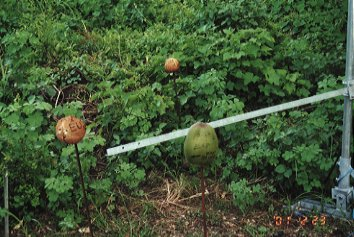
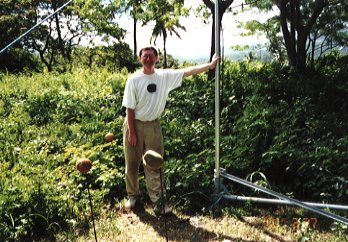
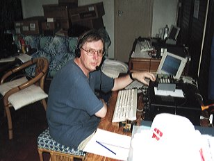
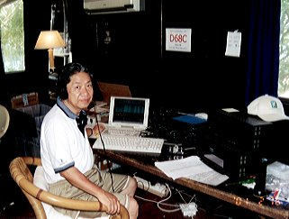
|
運用にはPC-LOGが使われたためCWの運用は勿論、SSB/FMなどの"ボイス系"のQSOも全てヘイル(Heil)のヘッドセットとフットスイッチが使われた。
両手を自由に使えるようにするためだが、途中で約半数のメンバーが帰国し、この時に自前のヘッドセットを持ち帰ったメンバーも居て、
持参しなかったメンバーを慌てさせる一幕も。期間中ハンドマイクを目にする事は一度も無かった。 |
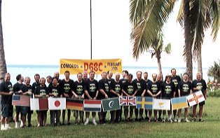 |
D68C(1) Pedition |
 |
D68C(2) Projects |
 |
D68C(4) Comoros |
 |
D68C(5) Album |